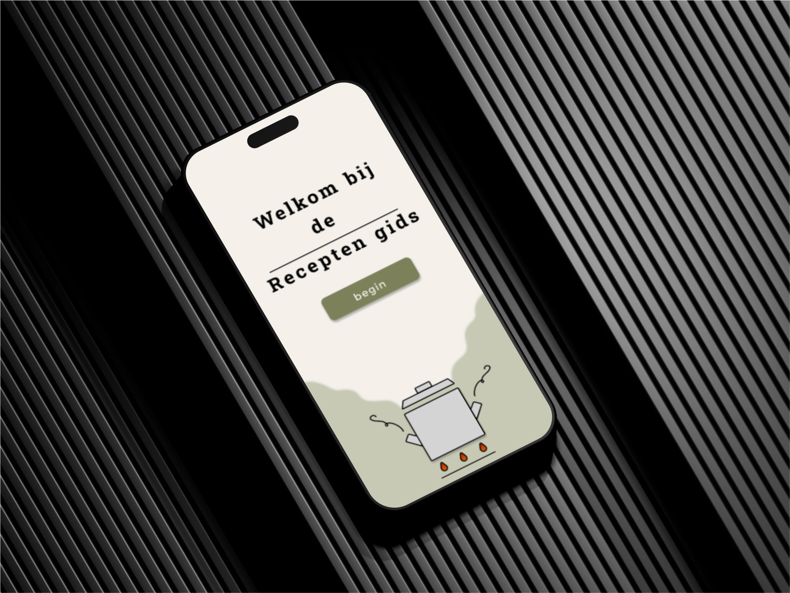
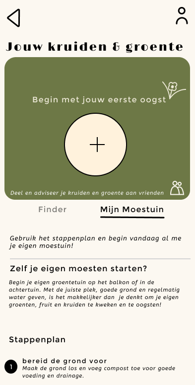
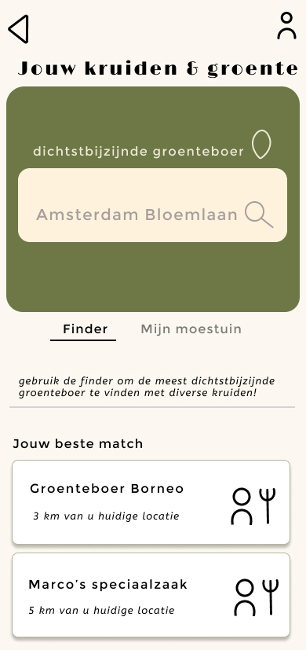
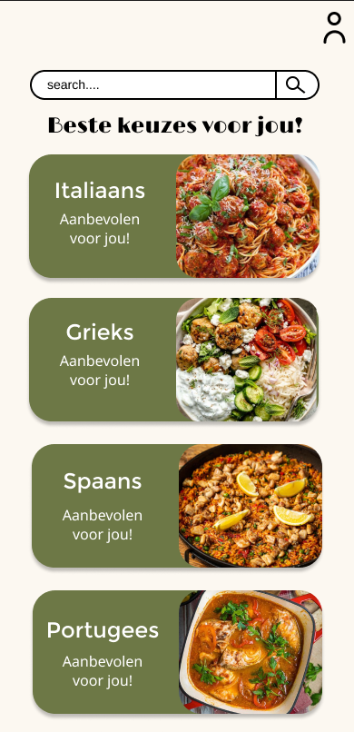
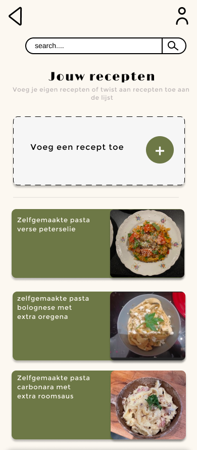

The Recipe Guide
I designed a recipe app specifically tailored for cooking enthusiasts between the ages of 40 and 60, with a focus on pasta. This target audience often has some cooking experience and seeks an app that supports them in preparing advanced and diverse pasta dishes.
About the Assignment
My design focuses on solving problems and fulfilling the needs and opportunities identified by an experienced cook. The app offers an easy-to-use interface, detailed step-by-step instructions, and features like shopping lists and cooking timers to make the pasta cooking experience as enjoyable and efficient as possible.
Problem Statement
Through interviews, I discovered that budget is the biggest issue for cooking enthusiasts when preparing pasta recipes. To solve this, I added a simple yet sustainable feature to the app. It includes a small vegetable garden that you can keep track of, and the ability to borrow and share products with friends and family. These budget-friendly solutions are clearly explained in a dedicated section of the app.
My Role
- UI Design
- Concept Development
- Interface Design
- UX Design
- Functional Design
- Brand Identity
- Sub-style
- Target Audience Focus
- User Experience
- Innovator
- Brainstorming
Branding
The logo of "The Recipe Guide" exudes simplicity and homeliness, perfectly matching the target audience of cooking enthusiasts. The use of a cooking pot with rising steam symbolizes warmth and coziness in the kitchen. The subtle flames beneath the pot emphasize the idea of cooking on a traditional and familiar stove. This logo communicates not only that the app offers practical and accessible recipes, but also that cooking can be a pleasurable and carefree experience.
Scroll Through the One-Pager
Check out the one-pager on Figma and scroll through the page.
View on FigmaProject Images



